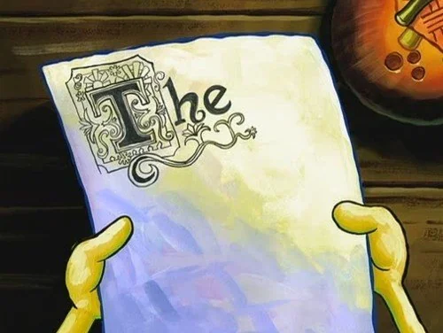

My First Blogpost
Date: 4 March, 2026
Introduction
Hello and welcome to my very first blogpost. I am using this website and blog to practice HTML,
CSS, and eventually Java Script. This is my very first time using HTML and I'm sure it's obvious
that I'm a bit of a novice from my flower drawing on the home page.
I'll continue to improve this website as time goes on and eventually use it for telling short stories,
my thoughts, recipes, physics, music, and other things I find interesting. In this first blogpost I'll explain some of my design
plans for the page. This post will be more of a checklist.
Post
- Add a side bar for better navigation.
- Add a tab bar for each page
- Make the background more interesting. I'm going for a floral/fantasy feel so maybe I'll add leaves in the background (perhaps a background images). Maybe also some sort of fancy lettering for the first letter of a post (like how they do it in fantasy books or that one episode of spongebob (see image).

- Add actions for the xxx and ooo (hugs and kisses) buttons on the home page. Maybe to track how many times they are pushed on a little graph near each post. This is mainly to practice using buttons. I'm not really expecting this blog to be very popular.
- Add a place to add the date on each blog post box on the home page (across from the link/title).
- Fix sizing, particularly of the pictures. I can't figure out why they sometimes want to be ovals, I'm telling them to be circles.
- Some html pages have side collumns that differ from the center. I'm not sure what that's called but I want to figure it out.
- Add a vertical scrollbar for the blog post section of the homepage.
- Fix the stem of my flower on the homepage. For most browser sizes it looks fine, but if the browser is too skinny it sometimes gets shifted into the circular flower. Maybe I need to fix both ends of the flower to the upper and lower elements to avoid that.
- Change the text in the leaves of the flower (to not say introduction blah blah blah...)
- Once I've made more blogposts add a search bar/ some method of organizing them (i.e. recipes tab, stories tab, etc). Not sure the best way to organize those yet.
- Make the home page generally more interesting, the flower needs some work.
- Find out how to make the introduction section of a blogpost (or at least some of it) appear in the blogpost boxes on the homepage without having to physically put it there everytime.
- Spice up some of the formatting of the actual blogposts in CSS (currently using the same css file for everthing). Decide whether a seperate file would make more sense.
- figure out how to make the buttons (xxx and ooo) fit inside the boxes on the homepage, it might be a dimensions thing. Might need to make the dimensions of the box ajust to the amount of text in each box.
- Leaves on homepage also adjust with text, need to find a way to fix their size (I'm confused though because I'm already setting the height and width dimensions.
- I am really struggling to format things left, right, and center. I need to spend sometime making sure each element is where I actually want it to be (not where HTML thinks it should be).
- Maybe some sort of box to go around the introduction section of each blog post (just to fancy it up).
- Is there a way to add some space to the bottom of the page? Not sure but it might be nice to not have the page end right on my text.
- Just Javascript in general. What does it do? How do I use it?
- Find a different title for the actual content of my blogposts (I hate 'post', it's so lame)
That's all for now. I'm sure I'll have many more ideas for the page soon but I figured this would be a good way to start. I'll figure out some way to check
off items as they are completed while still preserving the page for reference in the future.
Perhaps I'll make a running list eventually somewhere else on the page. Hopefuly my next post will be more exciting. I am interested in doing
some research on some of the jazz music I listen to. Until next time...